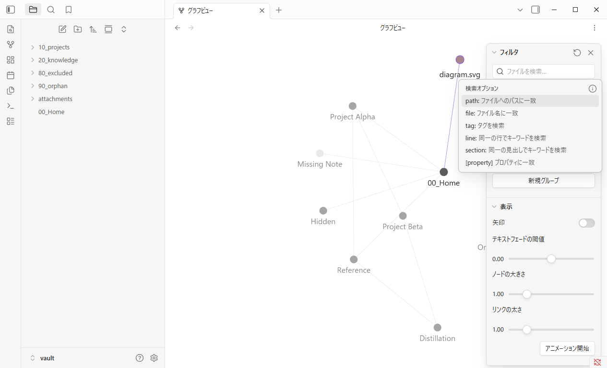
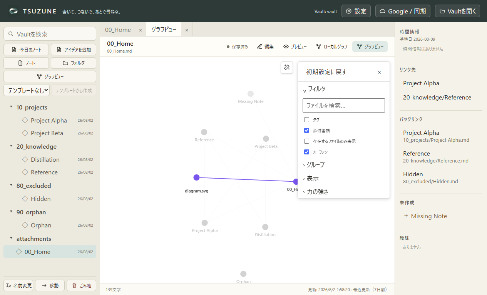
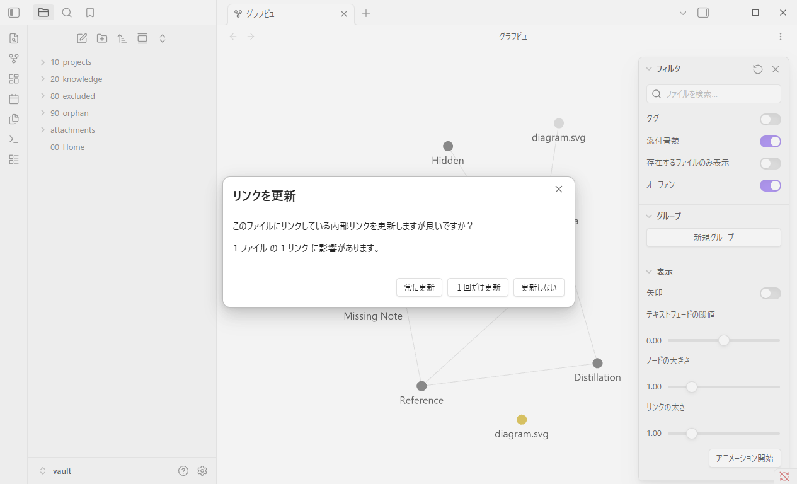
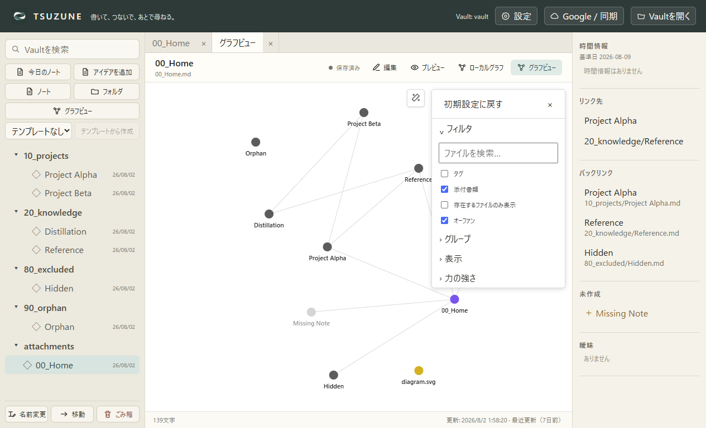
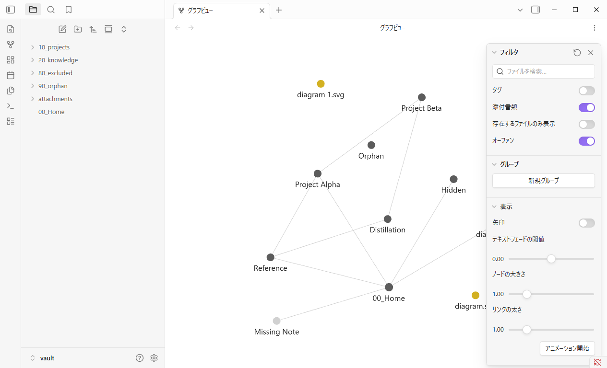
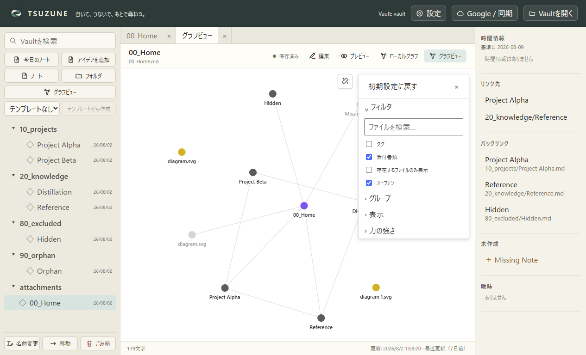

GP0-3b-j · 固定公開UI比較
移動しても、元リンクは勝手に書き換えない。
Obsidian Desktop 1.13.4とTSUZUNEを同じfixture、Global Graph、1265×768、DPR 1、ライトテーマで比較しました。
matched core behavior · known UI gaps
取消: ファイルもリンクも変えない


通常移動: 旧pathは未解決、新pathは実在node


同名衝突: diagram 1.svgへ自動採番


比較
| 確認項目 | Obsidian | TSUZUNE | 判定 |
|---|---|---|---|
| 右クリックで「新規ウィンドウで開く」の次に「ファイルを移動…」を表示 | true | true | matched |
| 取消時は元添付・埋め込み・Graphを変更しない | true | true | matched |
| 通常移動で元添付を消し、20_knowledge/diagram.svgを作る | true | true | matched |
| 移動後も![[attachments/diagram.svg]]を自動書換えしない | true | true | matched |
| 旧pathを未解決node、新pathを実在する孤立attachment nodeとして表示 | true | true | matched |
| 同名衝突時は既存diagram.svgを保持し、移動元をdiagram 1.svgへ採番 | true | true | matched |
| 取消／通常移動／衝突の結果をGraph再表示・アプリ再起動後も維持 | true | true | matched |
| 操作後もGlobal Graphを開いたまま保持 | true | true | matched |
| 移動先選択UI | 検索できるtypeahead prompt | selectと移動／キャンセルbutton | known-ui-gap |
| 添付nodeの右クリックmenu行数 | 11 | 4 | known-ui-gap |
取消、通常移動、同名衝突、自動採番、リンク非書換え、旧未解決nodeと新実在node、再表示／再起動保持は一致しました。移動先UIはtypeahead対select/button、menu全体は11対4であり、完全互換やpixel equivalenceは未達です。